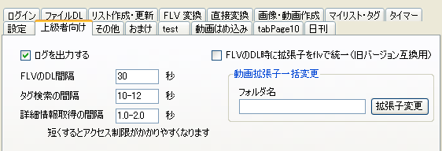

Ver 1.50 からは、DLした動画の拡張子がコンテナの種類に応じて ".flv"、".swf"、".mp4" になります。
これまでDLした動画の拡張子も一括変更できます。上級者向けタブで「動画拡張子一括変更」のところでフォルダを指定して「拡張子変更」ボタンを押してください。

従来の仕様のままにするには「FLVのDL時に…」のチェックボックスをオンにしてください。
FLV 変換では ".flv"、".swf"、".mp4" のいずれの拡張子も認識します。 同じファイル名で、".flv"、".swf"、".mp4" の3つの拡張子のファイルがあるときは、".swf"、".mp4"、".flv" の優先順に1つだけ読み込まれます。